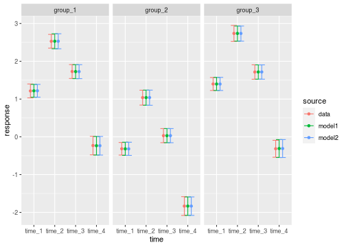
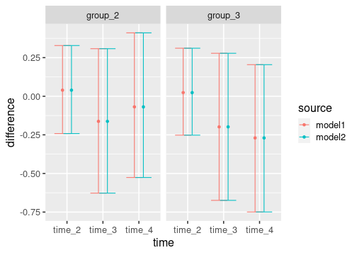
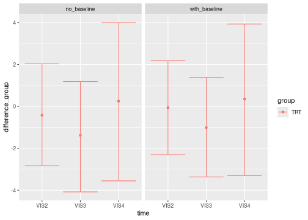
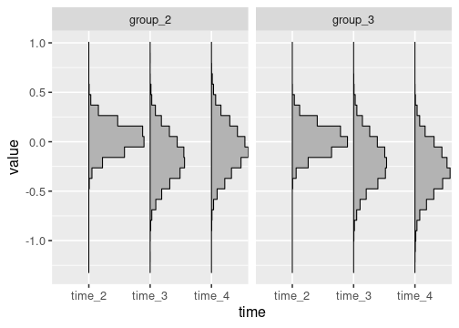

A mixed model of repeated measures (MMRM) analyzes longitudinal clinical trial data. In a longitudinal dataset, there are multiple patients, and each patient has multiple observations at a common set of discrete points in time.
Data
To use the brms.mmrm package, begin with a longitudinal
dataset with one row per patient observation and columns for the
response variable, treatment group indicator, discrete time point
indicator, patient ID variable, and optional baseline covariates such as
age and region. If you do not have a real dataset of your own, you can
simulate one from the package. The following dataset has the raw
response variable, the essential factor variables, and continuous
baseline covariates.1 In general, the outcome variable can either
be the raw response or change from baseline.
library(brms.mmrm)
library(dplyr)
library(magrittr)
set.seed(0L)
raw_data <- brm_simulate_simple(
n_group = 3,
n_patient = 100,
n_time = 4
) %>%
extract2("data") %>%
brm_simulate_continuous(c("biomarker1", "biomarker2", "biomarker3"))
raw_data
#> # A tibble: 1,200 × 7
#> response group time patient biomarker1 biomarker2 biomarker3
#> <dbl> <chr> <chr> <chr> <dbl> <dbl> <dbl>
#> 1 1.11 group_1 time_1 patient_001 1.31 -0.361 1.52
#> 2 2.15 group_1 time_2 patient_001 1.31 -0.361 1.52
#> 3 2.54 group_1 time_3 patient_001 1.31 -0.361 1.52
#> 4 -1.73 group_1 time_4 patient_001 1.31 -0.361 1.52
#> 5 1.11 group_1 time_1 patient_002 0.107 -2.44 -0.139
#> 6 2.64 group_1 time_2 patient_002 0.107 -2.44 -0.139
#> 7 1.69 group_1 time_3 patient_002 0.107 -2.44 -0.139
#> 8 0.783 group_1 time_4 patient_002 0.107 -2.44 -0.139
#> 9 0.118 group_1 time_1 patient_003 1.44 -0.419 -1.54
#> 10 2.48 group_1 time_2 patient_003 1.44 -0.419 -1.54
#> # ℹ 1,190 more rowsNext, create a special classed dataset that the package will recognize. The classed data object contains a pre-processed version of the data, along with attributes to declare the outcome variable, whether the outcome is response or change from baseline, the treatment group variable, the discrete time point variable, control group, baseline time point, and the covariates selected for analysis.
data <- brm_data(
data = raw_data,
outcome = "response",
role = "response",
group = "group",
patient = "patient",
time = "time",
covariates = c("biomarker1", "biomarker2"),
reference_group = "group_1",
reference_time = "time_1"
)
data
#> # A tibble: 1,200 × 6
#> response group time patient biomarker1 biomarker2
#> <dbl> <chr> <chr> <chr> <dbl> <dbl>
#> 1 1.11 group_1 time_1 patient_001 1.31 -0.361
#> 2 2.15 group_1 time_2 patient_001 1.31 -0.361
#> 3 2.54 group_1 time_3 patient_001 1.31 -0.361
#> 4 -1.73 group_1 time_4 patient_001 1.31 -0.361
#> 5 1.11 group_1 time_1 patient_002 0.107 -2.44
#> 6 2.64 group_1 time_2 patient_002 0.107 -2.44
#> 7 1.69 group_1 time_3 patient_002 0.107 -2.44
#> 8 0.783 group_1 time_4 patient_002 0.107 -2.44
#> 9 0.118 group_1 time_1 patient_003 1.44 -0.419
#> 10 2.48 group_1 time_2 patient_003 1.44 -0.419
#> # ℹ 1,190 more rows
class(data)
#> [1] "brm_data" "tbl_df" "tbl" "data.frame"
roles <- attributes(data)
roles$row.names <- NULL
str(roles)
#> List of 14
#> $ names : chr [1:6] "response" "group" "time" "patient" ...
#> $ class : chr [1:4] "brm_data" "tbl_df" "tbl" "data.frame"
#> $ brm_outcome : chr "response"
#> $ brm_role : chr "response"
#> $ brm_group : chr "group"
#> $ brm_time : chr "time"
#> $ brm_patient : chr "patient"
#> $ brm_covariates : chr [1:2] "biomarker1" "biomarker2"
#> $ brm_reference_group: chr "group_1"
#> $ brm_reference_time : chr "time_1"
#> $ brm_levels_group : chr [1:3] "group_1" "group_2" "group_3"
#> $ brm_levels_time : chr [1:4] "time_1" "time_2" "time_3" "time_4"
#> $ brm_labels_group : chr [1:3] "group_1" "group_2" "group_3"
#> $ brm_labels_time : chr [1:4] "time_1" "time_2" "time_3" "time_4"Formula
Next, choose a brms model formula for the fixed effect
and variance parameters. The brm_formula() function from
brms.mmrm makes this process easier. A cell means
parameterization for this particular model can be expressed as follows.
It specifies one fixed effect parameter for each combination of
treatment group and time point, and it makes the specification of
informative priors straightforward through the prior
argument of brm_model().
brm_formula(
data = data,
intercept = FALSE,
baseline = FALSE,
group = FALSE,
time = FALSE,
baseline_time = FALSE,
group_time = TRUE
)
#> response ~ 0 + group:time + biomarker1 + biomarker2 + unstr(time = time, gr = patient)
#> sigma ~ 0 + timeFor the purposes of our example, we choose a fully parameterized analysis of the raw response.
formula <- brm_formula(
data = data,
intercept = TRUE,
baseline = FALSE,
group = TRUE,
time = TRUE,
baseline_time = FALSE,
group_time = TRUE
)
formula
#> response ~ group + group:time + time + biomarker1 + biomarker2 + unstr(time = time, gr = patient)
#> sigma ~ 0 + timeParameterization
The formula is not the only factor that ultimately determines the
fixed effect parameterization. The ordering of the categorical variables
in the data, as well as the contrast option in R, affect
the construction of the model matrix. To see the model matrix that will
ultimately be used in brm_model(), run
brms::make_standata() and examine the X
element of the returned list.
The contrast option accepts a named vector of two
character vectors which govern model.matrix() contrasts for
unordered and ordered variables, respectively.
The make_standata() function lets you see the data that
brms will generate for Stan. This includes the fixed
effects model matrix X. Note the differences in the
groupgroup_* additive terms between the matrix below and
the one above.
head(brms::make_standata(formula = formula, data = data)$X)
#> Intercept groupgroup_1 groupgroup_2 timetime_1 timetime_2 timetime_3 biomarker1
#> 1 1 1 0 1 0 0 1.3126508
#> 2 1 1 0 0 1 0 1.3126508
#> 3 1 1 0 0 0 1 1.3126508
#> 4 1 1 0 0 0 0 1.3126508
#> 5 1 1 0 1 0 0 0.1068624
#> 6 1 1 0 0 1 0 0.1068624
#> biomarker2 groupgroup_1:timetime_1 groupgroup_2:timetime_1 groupgroup_1:timetime_2
#> 1 -0.3608809 1 0 0
#> 2 -0.3608809 0 0 1
#> 3 -0.3608809 0 0 0
#> 4 -0.3608809 0 0 0
#> 5 -2.4441488 1 0 0
#> 6 -2.4441488 0 0 1
#> groupgroup_2:timetime_2 groupgroup_1:timetime_3 groupgroup_2:timetime_3
#> 1 0 0 0
#> 2 0 0 0
#> 3 0 1 0
#> 4 0 0 0
#> 5 0 0 0
#> 6 0 0 0If you choose a different contrast method, a different model matrix may result.
options(
contrasts = c(unordered = "contr.treatment", ordered = "contr.poly")
)
# different model matrix than before:
head(brms::make_standata(formula = formula, data = data)$X)
#> Intercept groupgroup_2 groupgroup_3 timetime_2 timetime_3 timetime_4 biomarker1
#> 1 1 0 0 0 0 0 1.3126508
#> 2 1 0 0 1 0 0 1.3126508
#> 3 1 0 0 0 1 0 1.3126508
#> 4 1 0 0 0 0 1 1.3126508
#> 5 1 0 0 0 0 0 0.1068624
#> 6 1 0 0 1 0 0 0.1068624
#> biomarker2 groupgroup_2:timetime_2 groupgroup_3:timetime_2 groupgroup_2:timetime_3
#> 1 -0.3608809 0 0 0
#> 2 -0.3608809 0 0 0
#> 3 -0.3608809 0 0 0
#> 4 -0.3608809 0 0 0
#> 5 -2.4441488 0 0 0
#> 6 -2.4441488 0 0 0
#> groupgroup_3:timetime_3 groupgroup_2:timetime_4 groupgroup_3:timetime_4
#> 1 0 0 0
#> 2 0 0 0
#> 3 0 0 0
#> 4 0 0 0
#> 5 0 0 0
#> 6 0 0 0Priors
Some analyses require informative priors, others require
non-informative ones. Please use brms to
construct a prior suitable for your analysis. The brms
package has documentation on how its default priors are constructed and
how to set your own priors. Once you have an R object that represents
the joint prior distribution of your model, you can pass it to the
brm_model() function described below. The
get_prior() function shows the default priors for a given
dataset and model formula.
brms::get_prior(data = data, formula = formula)
#> prior class coef group resp dpar nlpar lb ub
#> (flat) b
#> (flat) b biomarker1
#> (flat) b biomarker2
#> (flat) b groupgroup_2
#> (flat) b groupgroup_2:timetime_2
#> (flat) b groupgroup_2:timetime_3
#> (flat) b groupgroup_2:timetime_4
#> (flat) b groupgroup_3
#> (flat) b groupgroup_3:timetime_2
#> (flat) b groupgroup_3:timetime_3
#> (flat) b groupgroup_3:timetime_4
#> (flat) b timetime_2
#> (flat) b timetime_3
#> (flat) b timetime_4
#> lkj(1) cortime
#> student_t(3, 0.9, 2.5) Intercept
#> (flat) b sigma
#> (flat) b timetime_1 sigma
#> (flat) b timetime_2 sigma
#> (flat) b timetime_3 sigma
#> (flat) b timetime_4 sigma
#> source
#> default
#> (vectorized)
#> (vectorized)
#> (vectorized)
#> (vectorized)
#> (vectorized)
#> (vectorized)
#> (vectorized)
#> (vectorized)
#> (vectorized)
#> (vectorized)
#> (vectorized)
#> (vectorized)
#> (vectorized)
#> default
#> default
#> default
#> (vectorized)
#> (vectorized)
#> (vectorized)
#> (vectorized)Model
To run an MMRM, use the brm_model() function. This
function calls brms::brm() behind the scenes, using the
formula and prior you set in the formula and
prior arguments.
model <- brm_model(data = data, formula = formula, refresh = 0)The result is a brms model object.
model
#> Family: gaussian
#> Links: mu = identity; sigma = log
#> Formula: response ~ group + group:time + time + biomarker1 + biomarker2 + unstr(time = time, gr = patient)
#> sigma ~ 0 + time
#> Data: data[!is.na(data[[attr(data, "brm_outcome")]]), ] (Number of observations: 1200)
#> Draws: 4 chains, each with iter = 2000; warmup = 1000; thin = 1;
#> total post-warmup draws = 4000
#>
#> Correlation Structures:
#> Estimate Est.Error l-95% CI u-95% CI Rhat Bulk_ESS Tail_ESS
#> cortime(time_1,time_2) 0.42 0.05 0.33 0.51 1.00 3382 2852
#> cortime(time_1,time_3) -0.80 0.02 -0.84 -0.76 1.00 2556 2895
#> cortime(time_2,time_3) -0.54 0.04 -0.62 -0.46 1.00 3662 3516
#> cortime(time_1,time_4) -0.29 0.05 -0.39 -0.18 1.00 3986 2962
#> cortime(time_2,time_4) 0.03 0.06 -0.08 0.14 1.00 3173 2746
#> cortime(time_3,time_4) -0.10 0.06 -0.21 0.01 1.00 3969 2808
#>
#> Population-Level Effects:
#> Estimate Est.Error l-95% CI u-95% CI Rhat Bulk_ESS Tail_ESS
#> Intercept 1.22 0.09 1.05 1.39 1.01 1362 2352
#> groupgroup_2 -1.54 0.13 -1.78 -1.30 1.01 1402 2349
#> groupgroup_3 0.18 0.12 -0.06 0.42 1.00 1547 2209
#> timetime_2 1.31 0.10 1.11 1.51 1.00 1807 2158
#> timetime_3 0.51 0.17 0.17 0.84 1.00 1538 2286
#> timetime_4 -1.45 0.17 -1.79 -1.12 1.01 1539 2284
#> biomarker1 -0.01 0.01 -0.03 0.01 1.00 5220 3207
#> biomarker2 0.02 0.01 0.00 0.04 1.00 5408 2900
#> groupgroup_2:timetime_2 0.04 0.15 -0.24 0.33 1.00 2001 2680
#> groupgroup_3:timetime_2 0.03 0.14 -0.25 0.30 1.00 2139 2806
#> groupgroup_2:timetime_3 -0.16 0.25 -0.64 0.32 1.00 1566 2224
#> groupgroup_3:timetime_3 -0.19 0.25 -0.68 0.29 1.00 1784 2678
#> groupgroup_2:timetime_4 -0.06 0.24 -0.54 0.42 1.00 1691 2437
#> groupgroup_3:timetime_4 -0.25 0.24 -0.71 0.22 1.00 1789 2256
#> sigma_timetime_1 -0.12 0.04 -0.20 -0.04 1.00 2528 2525
#> sigma_timetime_2 0.00 0.04 -0.07 0.09 1.00 3831 2891
#> sigma_timetime_3 -0.05 0.04 -0.13 0.03 1.00 2345 2748
#> sigma_timetime_4 0.21 0.04 0.13 0.29 1.00 3631 2831
#>
#> Draws were sampled using sampling(NUTS). For each parameter, Bulk_ESS
#> and Tail_ESS are effective sample size measures, and Rhat is the potential
#> scale reduction factor on split chains (at convergence, Rhat = 1).Marginals
Regardless of the choice of fixed effects formula,
brms.mmrm performs inference on the marginal distributions
at each treatment group and time point of the mean of the following
quantities:
- Response.
- Change from baseline, if you set
roleto"change"inbrm_data(). - Treatment difference, in terms of change from baseline.
- Effect size: treatment difference divided by the residual standard deviation.
To derive posterior draws of these marginals, use the
brm_marginal_draws() function.
draws <- brm_marginal_draws(model = model, data = data)
draws
#> $response
#> # A draws_df: 1000 iterations, 4 chains, and 12 variables
#> group_1|time_1 group_2|time_1 group_3|time_1 group_1|time_2 group_2|time_2
#> 1 1.2 -0.41 1.4 2.5 1.01
#> 2 1.2 -0.29 1.3 2.6 1.09
#> 3 1.3 -0.32 1.4 2.4 1.08
#> 4 1.2 -0.33 1.4 2.4 0.98
#> 5 1.2 -0.43 1.3 2.5 1.04
#> 6 1.3 -0.41 1.3 2.4 0.96
#> 7 1.4 -0.32 1.5 2.5 1.03
#> 8 1.3 -0.23 1.4 2.6 1.12
#> 9 1.2 -0.31 1.4 2.6 1.10
#> 10 1.2 -0.24 1.4 2.4 1.10
#> group_3|time_2 group_1|time_3 group_2|time_3
#> 1 2.6 1.7 0.121
#> 2 2.8 1.7 -0.065
#> 3 2.8 1.7 0.054
#> 4 2.8 1.8 0.078
#> 5 2.8 1.7 0.039
#> 6 2.7 1.8 0.139
#> 7 2.7 1.6 0.085
#> 8 2.8 1.5 -0.138
#> 9 2.6 1.7 0.014
#> 10 2.6 1.7 -0.072
#> # ... with 3990 more draws, and 4 more variables
#> # ... hidden reserved variables {'.chain', '.iteration', '.draw'}
#>
#> $difference_time
#> # A draws_df: 1000 iterations, 4 chains, and 9 variables
#> group_1|time_2 group_1|time_3 group_1|time_4 group_2|time_2 group_2|time_3
#> 1 1.3 0.47 -1.4 1.4 0.527
#> 2 1.3 0.48 -1.4 1.4 0.221
#> 3 1.2 0.42 -1.5 1.4 0.375
#> 4 1.2 0.53 -1.5 1.3 0.411
#> 5 1.2 0.49 -1.6 1.5 0.470
#> 6 1.2 0.52 -1.5 1.4 0.552
#> 7 1.0 0.14 -2.1 1.4 0.407
#> 8 1.3 0.26 -1.3 1.4 0.096
#> 9 1.4 0.48 -1.3 1.4 0.322
#> 10 1.2 0.50 -1.5 1.3 0.171
#> group_2|time_4 group_3|time_2 group_3|time_3
#> 1 -1.5 1.2 0.29
#> 2 -1.4 1.5 0.50
#> 3 -1.7 1.3 0.18
#> 4 -1.6 1.4 0.23
#> 5 -1.2 1.5 0.56
#> 6 -1.4 1.4 0.61
#> 7 -1.6 1.2 0.13
#> 8 -1.4 1.4 0.28
#> 9 -1.6 1.2 0.33
#> 10 -1.5 1.2 0.36
#> # ... with 3990 more draws, and 1 more variables
#> # ... hidden reserved variables {'.chain', '.iteration', '.draw'}
#>
#> $difference_group
#> # A draws_df: 1000 iterations, 4 chains, and 6 variables
#> group_2|time_2 group_2|time_3 group_2|time_4 group_3|time_2 group_3|time_3
#> 1 0.133 0.054 -0.096 -0.053 -0.1791
#> 2 0.059 -0.264 0.017 0.167 0.0151
#> 3 0.219 -0.049 -0.144 0.154 -0.2428
#> 4 0.142 -0.115 -0.085 0.199 -0.2974
#> 5 0.244 -0.016 0.382 0.321 0.0719
#> 6 0.209 0.034 0.170 0.275 0.0925
#> 7 0.324 0.269 0.442 0.217 -0.0091
#> 8 0.006 -0.161 -0.097 0.049 0.0216
#> 9 -0.016 -0.156 -0.354 -0.174 -0.1527
#> 10 0.148 -0.325 0.036 0.041 -0.1382
#> group_3|time_4
#> 1 -0.376
#> 2 -0.063
#> 3 -0.046
#> 4 -0.069
#> 5 -0.049
#> 6 -0.029
#> 7 0.486
#> 8 -0.299
#> 9 -0.431
#> 10 -0.316
#> # ... with 3990 more draws
#> # ... hidden reserved variables {'.chain', '.iteration', '.draw'}
#>
#> $effect
#> # A draws_df: 1000 iterations, 4 chains, and 6 variables
#> group_2|time_2 group_2|time_3 group_2|time_4 group_3|time_2 group_3|time_3
#> 1 0.134 0.055 -0.079 -0.054 -0.1846
#> 2 0.060 -0.286 0.014 0.170 0.0164
#> 3 0.209 -0.047 -0.118 0.147 -0.2351
#> 4 0.137 -0.112 -0.070 0.192 -0.2910
#> 5 0.223 -0.016 0.313 0.292 0.0726
#> 6 0.195 0.034 0.140 0.257 0.0930
#> 7 0.337 0.275 0.360 0.226 -0.0094
#> 8 0.006 -0.179 -0.079 0.049 0.0241
#> 9 -0.016 -0.167 -0.282 -0.177 -0.1632
#> 10 0.150 -0.345 0.030 0.041 -0.1465
#> group_3|time_4
#> 1 -0.307
#> 2 -0.052
#> 3 -0.037
#> 4 -0.057
#> 5 -0.040
#> 6 -0.024
#> 7 0.396
#> 8 -0.246
#> 9 -0.343
#> 10 -0.262
#> # ... with 3990 more draws
#> # ... hidden reserved variables {'.chain', '.iteration', '.draw'}If you need samples from these marginals averaged across time points,
e.g. an “overall effect size”, brm_marginal_draws_average()
can average the draws above across discrete time points (either all or a
user-defined subset).
brm_marginal_draws_average(draws = draws, data = data)
#> $response
#> # A draws_df: 1000 iterations, 4 chains, and 3 variables
#> group_1|average group_2|average group_3|average
#> 1 1.3 -0.31 1.3
#> 2 1.3 -0.24 1.4
#> 3 1.3 -0.29 1.4
#> 4 1.3 -0.30 1.4
#> 5 1.3 -0.24 1.4
#> 6 1.3 -0.28 1.4
#> 7 1.2 -0.29 1.4
#> 8 1.4 -0.23 1.4
#> 9 1.3 -0.29 1.4
#> 10 1.3 -0.24 1.3
#> # ... with 3990 more draws
#> # ... hidden reserved variables {'.chain', '.iteration', '.draw'}
#>
#> $difference_time
#> # A draws_df: 1000 iterations, 4 chains, and 3 variables
#> group_1|average group_2|average group_3|average
#> 1 0.104 0.1343 -0.0983
#> 2 0.125 0.0620 0.1643
#> 3 0.029 0.0377 -0.0159
#> 4 0.058 0.0387 0.0024
#> 5 0.045 0.2492 0.1599
#> 6 0.045 0.1828 0.1580
#> 7 -0.301 0.0444 -0.0696
#> 8 0.092 0.0083 0.0158
#> 9 0.205 0.0291 -0.0480
#> 10 0.054 0.0073 -0.0835
#> # ... with 3990 more draws
#> # ... hidden reserved variables {'.chain', '.iteration', '.draw'}
#>
#> $difference_group
#> # A draws_df: 1000 iterations, 4 chains, and 2 variables
#> group_2|average group_3|average
#> 1 0.0300 -0.203
#> 2 -0.0626 0.040
#> 3 0.0087 -0.045
#> 4 -0.0195 -0.056
#> 5 0.2037 0.114
#> 6 0.1377 0.113
#> 7 0.3453 0.231
#> 8 -0.0837 -0.076
#> 9 -0.1754 -0.253
#> 10 -0.0472 -0.138
#> # ... with 3990 more draws
#> # ... hidden reserved variables {'.chain', '.iteration', '.draw'}
#>
#> $effect
#> # A draws_df: 1000 iterations, 4 chains, and 2 variables
#> group_2|average group_3|average
#> 1 0.037 -0.182
#> 2 -0.071 0.045
#> 3 0.015 -0.042
#> 4 -0.015 -0.052
#> 5 0.173 0.108
#> 6 0.123 0.109
#> 7 0.324 0.204
#> 8 -0.084 -0.058
#> 9 -0.155 -0.228
#> 10 -0.055 -0.122
#> # ... with 3990 more draws
#> # ... hidden reserved variables {'.chain', '.iteration', '.draw'}The brm_marginal_summaries() function produces posterior
summaries of these marginals, and it includes the Monte Carlo standard
error (MCSE) of each estimate.
summaries <- brm_marginal_summaries(draws, level = 0.95)
summaries
#> # A tibble: 165 × 6
#> marginal statistic group time value mcse
#> <chr> <chr> <chr> <chr> <dbl> <dbl>
#> 1 difference_group lower group_2 time_2 -0.238 0.00963
#> 2 difference_group lower group_2 time_3 -0.636 0.00938
#> 3 difference_group lower group_2 time_4 -0.540 0.00959
#> 4 difference_group lower group_3 time_2 -0.250 0.00661
#> 5 difference_group lower group_3 time_3 -0.679 0.00935
#> 6 difference_group lower group_3 time_4 -0.713 0.0103
#> 7 difference_group mean group_2 time_2 0.0441 0.00329
#> 8 difference_group mean group_2 time_3 -0.159 0.00624
#> 9 difference_group mean group_2 time_4 -0.0616 0.00593
#> 10 difference_group mean group_3 time_2 0.0279 0.00312
#> # ℹ 155 more rowsThe brm_marginal_probabilities() function shows
posterior probabilities of the form,
\[ \begin{aligned} \text{Prob}(\text{treatment effect} > \text{threshold}) \end{aligned} \]
or
\[ \begin{aligned} \text{Prob}(\text{treatment effect} < \text{threshold}) \end{aligned} \]
brm_marginal_probabilities(
draws = draws,
threshold = c(-0.1, 0.1),
direction = c("greater", "less")
)
#> # A tibble: 12 × 5
#> direction threshold group time value
#> <chr> <dbl> <chr> <chr> <dbl>
#> 1 greater -0.1 group_2 time_2 0.828
#> 2 greater -0.1 group_2 time_3 0.404
#> 3 greater -0.1 group_2 time_4 0.567
#> 4 greater -0.1 group_3 time_2 0.816
#> 5 greater -0.1 group_3 time_3 0.365
#> 6 greater -0.1 group_3 time_4 0.254
#> 7 less 0.1 group_2 time_2 0.645
#> 8 less 0.1 group_2 time_3 0.850
#> 9 less 0.1 group_2 time_4 0.753
#> 10 less 0.1 group_3 time_2 0.703
#> 11 less 0.1 group_3 time_3 0.885
#> 12 less 0.1 group_3 time_4 0.926Finally, brm_marignal_data() computes marginal means and
confidence intervals on the response variable in the data, along with
other summary statistics.
summaries_data <- brm_marginal_data(data = data, level = 0.95)
summaries_data
#> # A tibble: 84 × 4
#> statistic group time value
#> <chr> <chr> <chr> <dbl>
#> 1 lower group_1 time_1 1.40
#> 2 lower group_1 time_2 2.71
#> 3 lower group_1 time_3 1.91
#> 4 lower group_1 time_4 0.0151
#> 5 lower group_2 time_1 -0.150
#> 6 lower group_2 time_2 1.23
#> 7 lower group_2 time_3 0.218
#> 8 lower group_2 time_4 -1.59
#> 9 lower group_3 time_1 1.57
#> 10 lower group_3 time_2 2.95
#> # ℹ 74 more rowsVisualization
The brm_plot_compare() function compares means and
intervals from many different models and data sources in the same plot.
First, we need the marginals of the data.
brm_plot_compare(
data = summaries_data,
model1 = summaries,
model2 = summaries
)
If you omit the marginals of the data, you can show inference on change from baseline or the treatment effect.
brm_plot_compare(
model1 = summaries,
model2 = summaries,
marginal = "difference_group" # treatment effect
)
Additional arguments let you control the primary comparison of interest (the color aesthetic), the horizontal axis, and the faceting variable.
brm_plot_compare(
model1 = summaries,
model2 = summaries,
marginal = "difference_group",
compare = "group",
axis = "time",
facet = "source" # model1 vs model2
)
Finally, brm_plot_draws() can plot the posterior draws
of the response, change from baseline, or treatment difference.
brm_plot_draws(draws = draws$difference_group)
The axis and facet arguments customize the
horizontal axis and faceting variable, respectively.
brm_plot_draws(
draws = draws$difference_group,
axis = "group",
facet = "time"
)